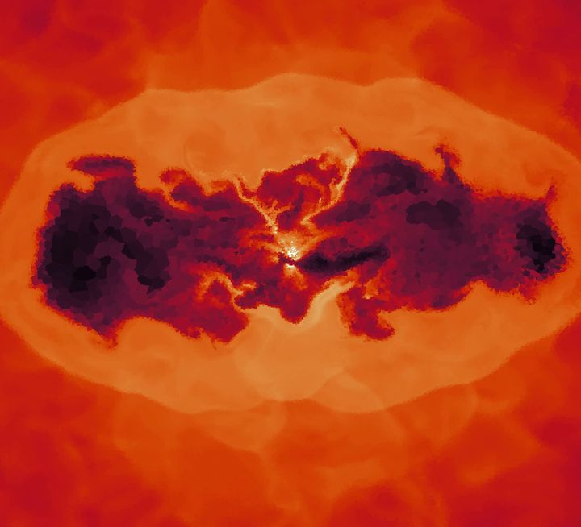
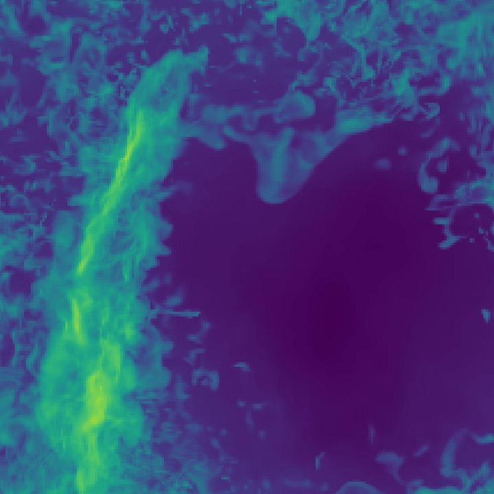

Research
I use numerical simulations to study the hot gas that fills galaxy groups and clusters: how black-hole jets heat it, and whether cold gas can survive inside it.

Master's thesis at AIP, 2025–2026
Supermassive black holes launch jets that inflate bubbles in the hot gas around them. I simulate these jets in galaxy groups and clusters with the moving-mesh code Arepo, to see how they heat the gas and hold back its cooling.
Read about the thesis

Research internship at MPA Garching, 2025
Can cold gas clouds survive inside the hot, turbulent gas of a galaxy cluster? With 3D Athena++ simulations I found that clouds a thousand times denser than their surroundings must cool much faster than expected to survive.
Read about the project
Publications
-
Survival of higher overdensity cold gas in a turbulent, multiphase medium
Ashwin Vergis George, Hitesh Kishore Das, Max Gronke
Research Notes of the AAS, 2025
JournalarXiv